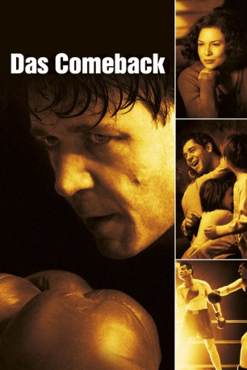

#4303 Das Comeback
Alternativ: Cinderella Man
Auszeichnungen: für 3 Oscars nominiert
 
 IMDB-Wertung: 8.0 / 10
IMDB-Wertung: 8.0 / 10  Metascore: 0
Metascore: 0 
Nachdem er etliche Kämpfe hintereinander verloren hat, sieht der Halbschwergewicht-Boxer Jim Braddock keinen anderen Ausweg mehr: Er hört auf, in den Ring zu steigen und muss sich von nun an mit mickrigen Jobs begnügen, damit er, seine Frau Mae und seine Kinder über die Runden kommen.Eines Tages allerdings hat er die Chance zu seinem großen Comeback, als ein anderer Boxer einen Kampf absagen muss und Jim für ihn den Ring zurückkehrt. Hingegen aller Erwartungen gewinnt er den Kampf und wird so zum Held. Doch sein nächster Gegner wird nicht so einfach zu besiegen sein. Das Schwergewicht Max Baer stieg nämlich schon zweimal als einziger Überlebender aus dem Ring...
Jahr: 2005
Dauer: 144 Minuten
FSK: 12
Land: USA Studio: Universal PicturesTonspuren: DTS - ,
Untertitel: Deutsch,
Auflösung: 1080p (1920x816) Größe: 6963 MB
Genre: Biographie, Drama, Sport
Regisseur:  Ron Howard
Ron Howard
Drehbuch: Lung Ku
Soundtrack:
Darsteller:
 Russell Crowe als Jim Braddock
Russell Crowe als Jim Braddock Renée Zellweger als Mae Braddock
Renée Zellweger als Mae Braddock Paul Giamatti als Joe Gould
Paul Giamatti als Joe Gould Craig Bierko als Max Baer
Craig Bierko als Max Baer Paddy Considine als Mike Wilson
Paddy Considine als Mike Wilson Bruce McGill als Jimmy Johnston
Bruce McGill als Jimmy Johnston Connor Price als Jay Braddock
Connor Price als Jay Braddock- Ariel Waller als Rosemarie Braddock
- Patrick Louis als Howard Braddock
 Rosemarie DeWitt als Sara
Rosemarie DeWitt als Sara- Linda Kash als Lucille Gould
 Nicholas Campbell als Sporty Lewis
Nicholas Campbell als Sporty Lewis Chuck Shamata als Father Rorick
Chuck Shamata als Father Rorick Ron Canada als Joe Jeanette
Ron Canada als Joe Jeanette Alicia Johnston als Alice
Alicia Johnston als Alice Matthew G. Taylor als Primo Carnera
Matthew G. Taylor als Primo Carnera Rance Howard als Announcer Al Fazin
Rance Howard als Announcer Al Fazin Fulvio Cecere als Referee McAvoy
Fulvio Cecere als Referee McAvoy Clint Howard als Referee
Clint Howard als Referee Rufus Crawford als Lewis Coach
Rufus Crawford als Lewis Coach- Angelo Dundee als Angelo the Cornerman
- Wayne Gordon als Braddock Cornerman
 Nick Alachiotis als Baer Cornerman / Undercard Boxer - Feldman
Nick Alachiotis als Baer Cornerman / Undercard Boxer - Feldman- Stuart Clark als Frankie Campbell
- Julian Lewis als Undercard Boxer - Feldman
 Sergio Di Zio als Young Reporter
Sergio Di Zio als Young Reporter Gavin Grazer als Reporter
Gavin Grazer als Reporter Boyd Banks als Reporter
Boyd Banks als Reporter Angelo Tsarouchas als Reporter
Angelo Tsarouchas als Reporter- Craig Warnock als 1928 Fan
 Aaron Abrams als 1928 Fan
Aaron Abrams als 1928 Fan- Duff MacDonald als 1935 Fan
 Peter MacNeill als Electric Man
Peter MacNeill als Electric Man- John Healy als Dock Worker
- Nola Augustson als Relief Office Woman
- Sharron Matthews als Lady
 Philip Craig als Radio Commentator
Philip Craig als Radio Commentator- Michael Dyson als Hooverville Man
- Ramona Pringle als Flapper Girl
- Brian Jagersky als Cop
- Timothy Burd als Man in Soup Line , uncredited
- Krysta Carter als Fluzy , uncredited
- Rick Cordeiro als Ringside Fan , uncredited
- Riva Di Paola als 1935 Fan , uncredited
 Mark Falvo als Press , uncredited
Mark Falvo als Press , uncredited- Conor Gomez als Ringside Fan , uncredited
- Robert William McAlpine als Ringside Fan , uncredited
- Kennedy McGuckian als Rich Kid , uncredited
- Liam McGuckian als Rich Kid , uncredited
- Michael C. Newsome als Cad in Armory , uncredited
Datei: X:\2005(A-F)\Comeback, Das (2005, FSK12, 1920x816).mkv seit 04.09.2016
Festplatte: HD 2003-2004-2005(A-F)
 Es gibt insgesamt 49 Filme in der Gruppe '2005(A-F)'
Es gibt insgesamt 49 Filme in der Gruppe '2005(A-F)'